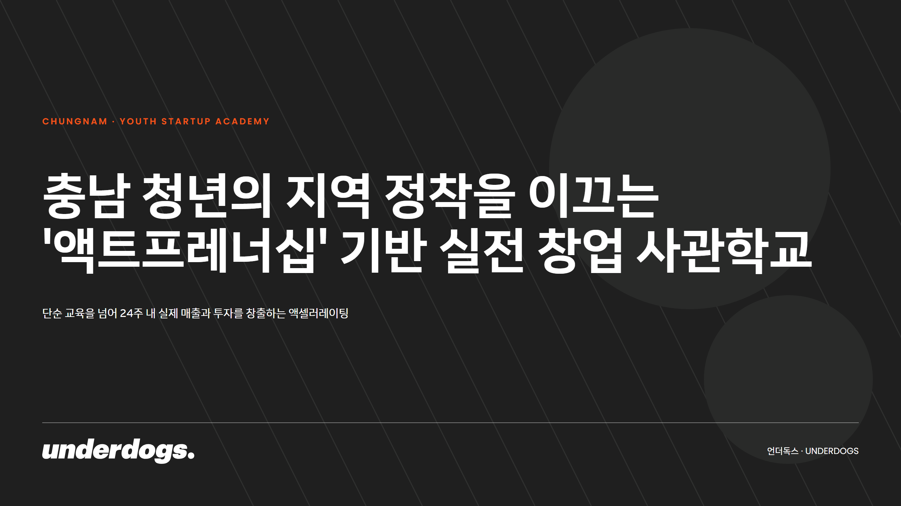
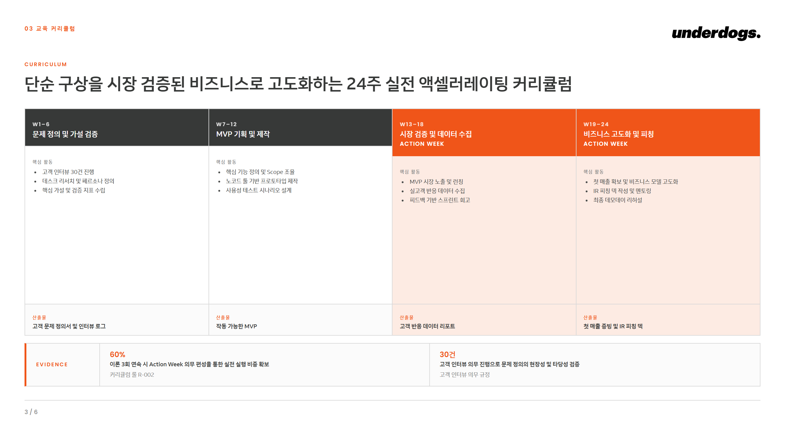
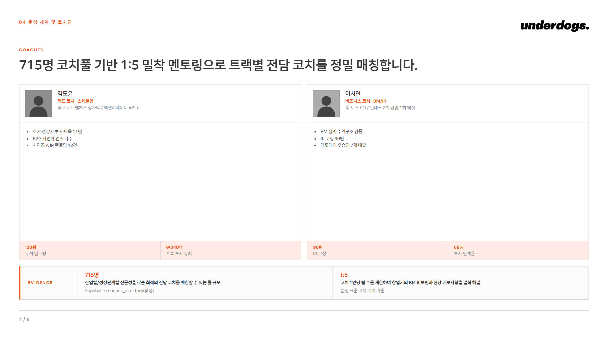
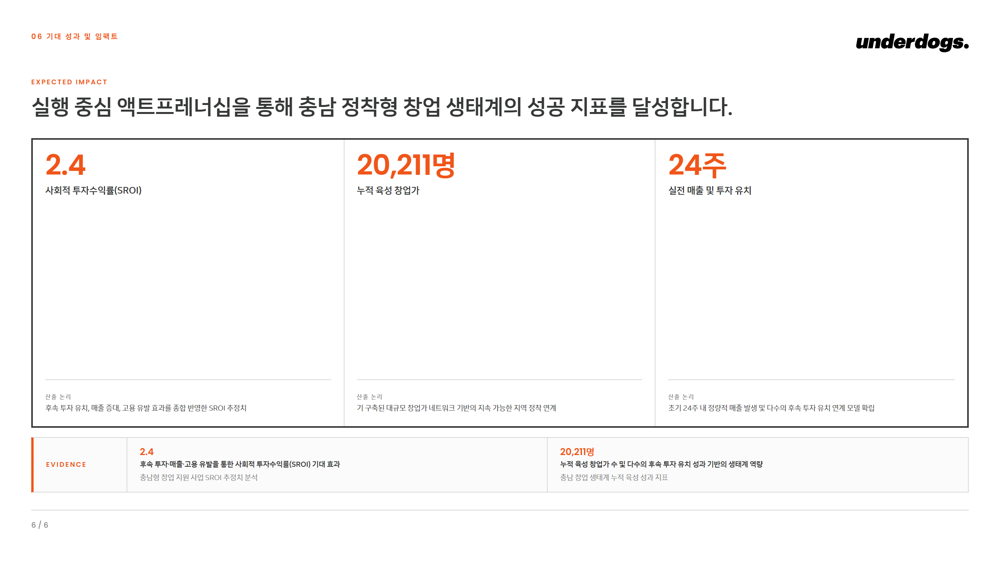

North Star
RFP + 사내 자산 → 당선 가능성이 근거로 받쳐진 1차 덱. 디자인까지 완성된 PDF/HTML.
Internal Planning Think-Tank & Engine
PM이 RFP와 자료를 넣으면, AI가 사내 자산·당선 제안서를 근거로 덱(논증)을 먼저 설계하고 슬라이드를 당선 밀도로 자동 저작해 디자인 완성된 1차 덱을 만든다. 산출물은 더 이상 와이어프레임이 아니라, 발주처에 그대로 낼 수 있는 수준을 지향한다.
Contents
00 · Executive Summary
북극성 · 한 페이지 요약
기존 PPTX 출력은 실제 당선 덱의 20~30% 수준에 머물렀다. 원인은 튜닝이 아니라 구조 — ①8개 추상 패턴이라는 좁은 표현 어휘 ②손코딩 사각형(OOXML) 기질 ③산문을 쓰고 슬라이드로 쪼개는 거꾸로 된 저작 순서. v2.0은 이 셋을 모두 바꾼다: HTML/CSS 렌더 기질 · 리치 컴포넌트 어휘 · 덱-우선 저작.
North Star
RFP + 사내 자산 → 당선 가능성이 근거로 받쳐진 1차 덱. 디자인까지 완성된 PDF/HTML.
Flywheel
우리가 만든 모든 자산·당선 제안서를 계속 학습 → 다음 제안서는 직전보다 낫다.
Multi-과업
교육·행사운영·장소·특강연사 등 여러 과업이 모인 프로젝트를 키메시지 + 과업별 근거로.
현재 자동 저작이 실제로 작동한다(실 Gemini 검증). RFP 그라운딩 → 스토리라인 설계 → 슬라이드 슬롯 자동 채움 → 당선 밀도 PDF가 한 번에 나온다. 남은 일은 이 파이프라인을 앱에 붙이는 배선(DECK-3b)과 비평 루프(DECK-4)·실 자산 그라운딩(DATA-2)으로 품질을 더 끌어올리는 것이다.
01 · Product Process
RFP·자산이 들어와 당선 1차 덱으로 나오기까지. AI는 콘텐츠 생성자이자 오케스트레이터.
① 그라운딩·④ 비평 = 품질 결정(Pro 티어) · ② 스토리라인 = 논증 설계 · ③ 슬롯 채움 = plumbing(Flash) · ⑤ 렌더 = 별도 워커(chromium). 산출 덱은 다시 학습 코퍼스로 환류한다.
왜 덱-우선인가
당선 덱은 산문을 쪼갠 게 아니라 논증으로 설계된다. 슬라이드 한 장 = 액션 타이틀(주장) + so-what + 근거. 그래서 스토리라인을 먼저 세운다.
왜 HTML 기질인가
손코딩 사각형(OOXML)은 아이콘·사진·실제 타이포가 원천적으로 안 들어간다. 브라우저가 그리게 하면 웹 디자인 어휘 전체가 열린다.
02 · User Flow
PM은 결정 지점에서만 개입한다. AI가 자동으로 채우고, PM은 승인·보강한다.
PM 입력 부담은 그대로 두고 AI가 더 일한다(Express 2.0 원칙). 무거운 외부 리서치만 별도, 왔다갔다 최소화.
03 · Output Mockups
아래는 합성 RFP(충남 청년창업)로 AI가 그라운딩에서 자동 저작한 실제 렌더 결과. 손코딩 아님.




정직한 현황
목업의 수치는 검증용 예시 그라운딩이다. 실제 코치 실명·실적·실수치는 DATA-2(실 자산 그라운딩)에서 주입된다. 또 LLM이 코치를 보수적으로(예: 2명) 채우는 등 밀도 선택은 DECK-4 비평 루프가 끌어올린다.
04 · Component Vocabulary
표현 어휘를 8개 추상 패턴에서 의미 단위 컴포넌트로 확장. JSON DeckSpec ↔ 렌더가 1:1.
| 컴포넌트 | 쓰임 |
|---|---|
| bigNumberHero | 한 핵심 수치 강조(One Loudest) — 배경·목적 |
| strategyCanvas | 2~4존 전략 카드(각 존 근거 한 줄) — 추진 전략·방법론 |
| curriculumMatrix | 주차×단계 셀(활동·산출물), Action Week 강조 — 커리큘럼 |
| coachDetailGrid | 사진+약력+정량 실적 배지 — 운영·코치진 |
| kpiWithLogic | 빅넘버 + 산출 메커니즘 + SROI — 기대 성과·임팩트 |
| iconProcess · milestoneTimeline | N단계 흐름 · 마일스톤 일정 |
| partnerLogoGrid · badgeRow | 발주처·파트너 격자 · 정량 실적 배지 — 수행 실적 |
| annotatedImage · composite | 주석 이미지 · 복합(주 컴포넌트 + 근거 밴드 적층) |
| cover · sectionDivider · closing | 표지 · 섹션 전환 · 마무리 |
모든 본문 컴포넌트는 EVIDENCE 밴드(수치 + 무엇을 증명 + 출처 3요소)를 품는다. 출처만 단 빈 근거는 금지 — "증명 못 하면 말하지 않는다."
05 · Architecture & Decisions
되돌리기 어려운 결정만. 전체 인덱스 = docs/decisions/README.
| ADR | 결정 | 상태 |
|---|---|---|
| 019 | 과업(Workstream) 레이어 — 제안서 = N과업 합성. 7섹션은 과업 위 투영 | Accepted |
| 021 | 단일 생성 엔진 — gather→assemble→win-theme→compliance→verify→self-score→정제 | Proposed |
| 022 · 023 | 모델 = Gemini 단일(2-tier: 품질=Pro / plumbing=Flash). @google/genai | Accepted |
| 024 | 슬라이드 합성 v2 — 레이아웃 아키타입·고밀도. (OOXML은 025에서 보조 강등) | Proposed |
| 025 | 덱-우선 HTML 렌더 기질 — 컴포넌트 어휘·스토리라인 저작·비평 루프. 렌더=별도 워커 | Proposed |
엔진
단일 생성 엔진이 과업·win-theme·검증을 한 곳에서. src/lib/express/engine
덱
DeckSpec(JSON) ↔ render-spec ↔ HTML 컴포넌트. src/lib/deck
학습
RET-1 검색 계약 + 당선 코퍼스. 그라운딩이 모든 근거의 원천.
06 · Keep / Improve / Deprecate / Add
출력 구조 전환(v2.0) 기준 재정리.
유지 (Keep)
고도화 (Improve)
폐기 (Deprecate)
추가 (Add)
07 · Roadmap
덱 출력 구조 전환 아크. ◀ = 현재.
| 단계 | 내용 | 상태 |
|---|---|---|
| DECK-1 | HTML 슬라이드 → headless chromium 고해상 PDF 렌더 기질 | 완료 |
| DECK-2 | 당선 밀도 컴포넌트 11종 + 밀도 proof(평균 12.9블록) | 완료 |
| DECK-3 · 3a | JSON DeckSpec↔렌더 계약 + 덱-우선 자동 저작(실 LLM 8장 완전 덱) | 완료 |
| DECK-3b | 렌더 워커(컨테이너) + API 라우트 + 미리보기/PDF 다운로드 UI | ◀ 진행 |
| DECK-4 | 슬라이드별 비평 루프 — 밀도·근거·so-what 게이트(멀티 에이전트) | 예정 |
| DATA-2 | pgvector + 실 코퍼스/실 자산 그라운딩 — 근거 수치의 진실화 | 예정 |
| 배포 | master 머지 → Vercel(icn1) + 렌더 워커 배포 → ud-planner 가시화 | 예정 |
현재 막힘 없음: 자동 저작은 작동 검증됨. DECK-3b는 워커(로컬에서 fixture→PDF로 검증 가능, DB 불필요)부터 → 라우트·UI → DB 올려 E2E 검증 → 머지·배포.